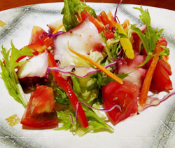

タコとセロリのカラフル
サラダ
サラダ
- 調理時間：15分
- （一人当たり）
- カロリー：340.5kcal
- たんぱく質：13.2g
- 脂質：25.9g
- 炭水化物：14.5g
- 塩分：1.5g


＜2人分＞
- セロリ
- 1本
- トマト
- 大1個
- パプリカ（赤・黄色）
- 各50g
- ニンジン
- 50g
- 紫キャベツ
- 1枚
- ゆでタコ
- 100g
- ・スダチ（果汁）
- 2～3個
- ・オリーブオイル
- 100ml
- ・塩、コショウ
- 少々
【ドレッシング】A
※お好みで酢を加えてもよい


- セロリは筋の部分を包丁またはピーラーで取りのぞき、茎と葉に分ける。
茎は短冊切り、葉は食べやすい長さのざく切りにする。 - トマトは湯むきをして、一口大に切る。
パプリカ、ニンジン、紫キャベツは細切りにする。 - ゆでタコは熱湯をかけて臭みをとり、薄切りにする。
- Aの材料を全て合わせ、ドレッシングをつくる。
- 野菜とタコをお皿に盛り付け、ドレッシングをお好みでかけていただく。
タコとセロリのカラフルサラダ
セロリは独特の香りを持つため、好き嫌いが分かれやすいのですが、実はたくさんの栄養素をもつ優秀な野菜です。茎も葉も種も余すところなく食べられるセロリですが、特に、葉の部分は茎以上に栄養素が豊富で、β―カロテン、ビタミンB1、ビタミンCなどが含まれます。
香りのもとであるアピインは、イライラや頭痛を緩和し、アロマテラピーの精油にも使用されています。ストレスが溜まりやすい状況にありますので食べものの香りの効果を期待するのもよいでしょう。
ドレッシングに使用したスダチのクエン酸にも、カルシウムの吸収を高め、不安感を軽減し、気分を安定させてくれるはたらきがあります。